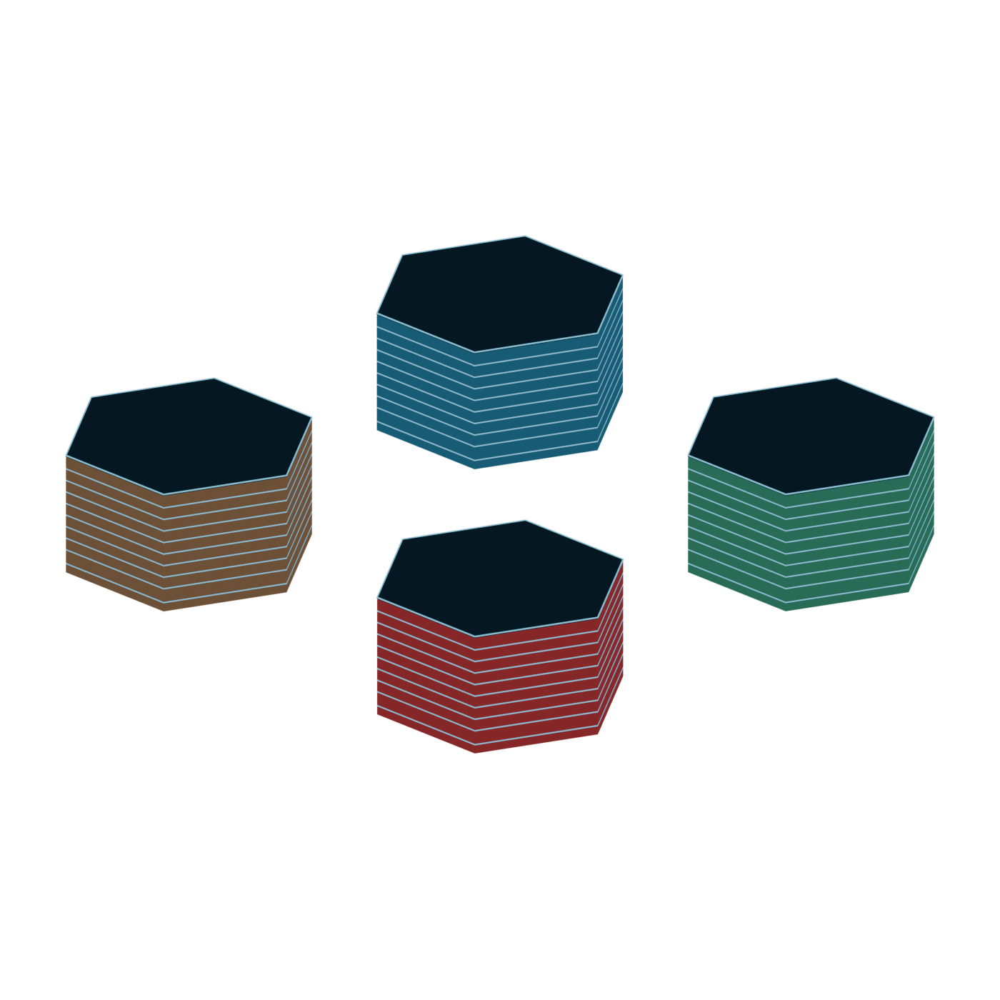
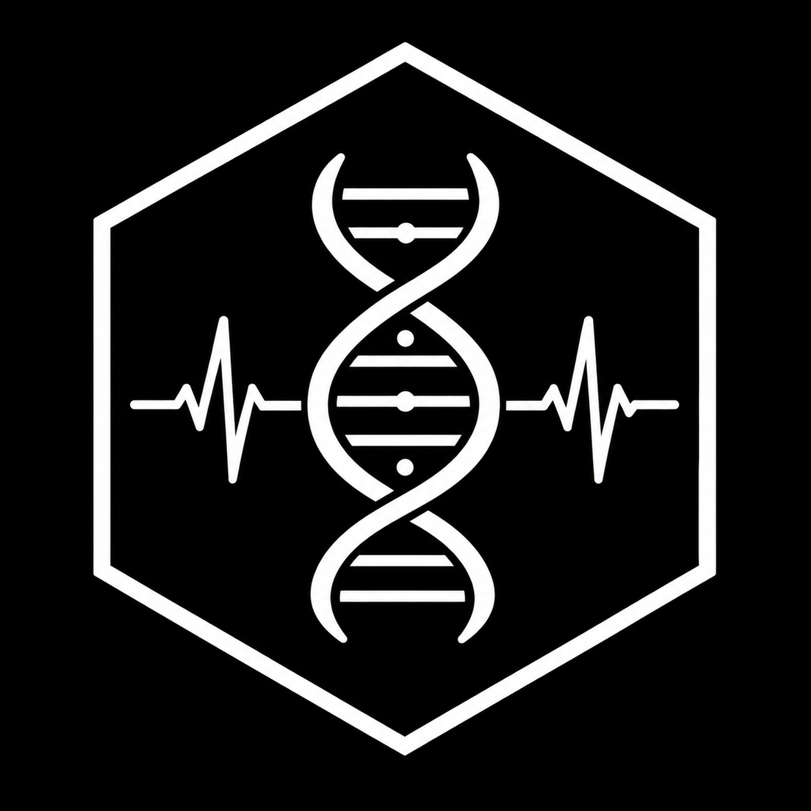

HOSPITAL · DIRECTORIO
¿A dónde desea dirigirse?
Seleccione un área para continuar.
DIRECTORIO GENERAL · NIVEL 01

MÓDULO HOSPITAL
SERVICIOS MÉDICOS
HOSPITAL reúne los servicios sanitarios de ALÉTHEIA. Sus instalaciones combinan atención médica y quirúrgica, diagnóstico, hospitalización y cuidados críticos con áreas dedicadas a la investigación biomédica, la formación sanitaria y la producción farmacéutica, garantizando una asistencia integral durante toda la misión.

HOSPITAL · DIRECTORIO
Seleccione un área para continuar.
DIRECTORIO GENERAL · NIVEL 01